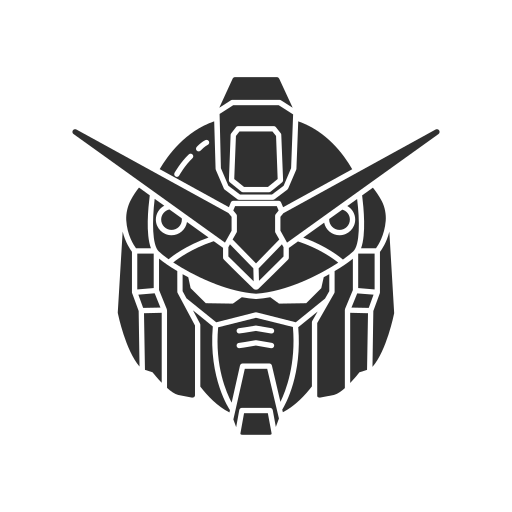

Gundam SED
Gundam SED
Gundam SED
Gundam SED
Gundam SED

Character Of Gundam SED
Kira Yamato adalah sosok yang lembut dan penuh empati, meski memiliki kemampuan luar biasa sebagai pilot Gundam; ia berjuang keras menyeimbangkan hati nuraninya dengan kenyataan perang. Athrun Zala, sahabat lamanya yang kini menjadi musuh di pihak lawan, adalah pribadi yang disiplin, berprinsip, dan sering dilanda konflik moral antara tugas dan persahabatan. Lacus Clyne tampil sebagai figur yang penuh kasih, bijaksana, dan idealis, berperan sebagai suara kedamaian di tengah kekacauan. Sementara itu, Cagalli Yula Athha memiliki karakter kuat, berani, dan tegas, mewakili semangat perlawanan serta tanggung jawab terhadap bangsanya. Keempatnya mencerminkan sisi manusiawi perang—antara cinta, idealisme, dan pilihan yang sulit dalam dunia yang terbelah oleh konflik.
Part Of Gundam SED
Gundam SEED adalah bagian dari waralaba Mobile Suit Gundam yang berlangsung di dunia Cosmic Era (C.E.). Ceritanya mengisahkan perang antara manusia alami (Naturals) dan hasil rekayasa genetik (Coordinators), dengan Kira Yamato dan Athrun Zala sebagai sahabat yang terpisah oleh konflik. Seri ini menyoroti tema kemanusiaan, moralitas perang, dan persahabatan di tengah pertempuran besar antara Aliansi Bumi dan ZAFT.